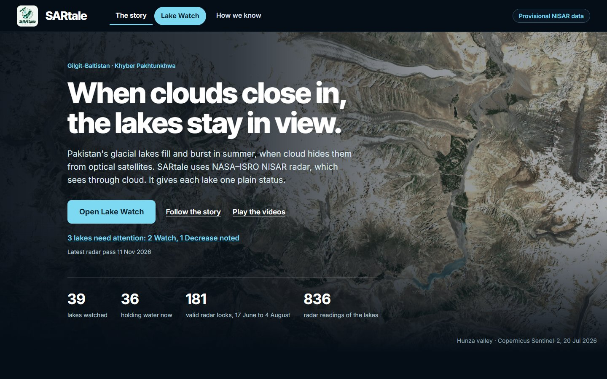
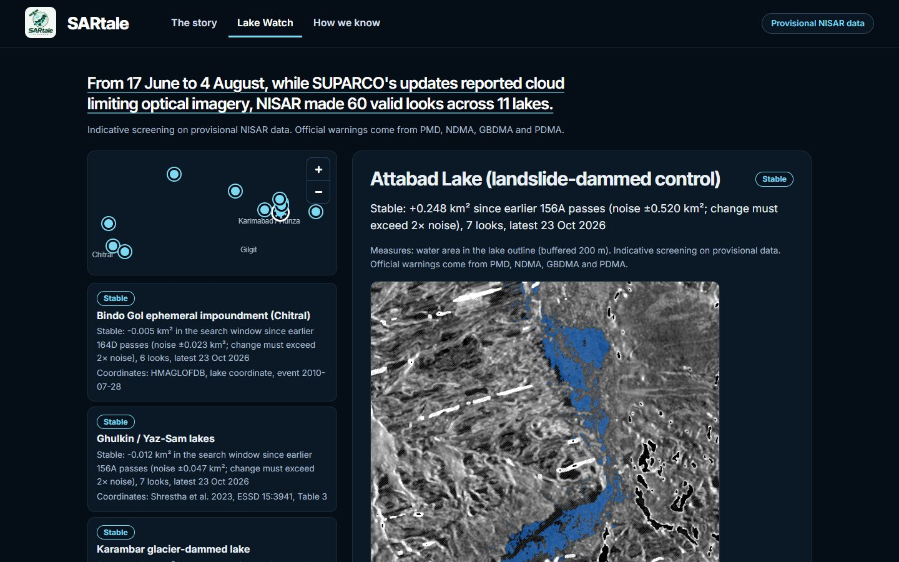

Using the website
The site has three views, all reached from the header: the story page, Lake Watch and How we know. Every page carries the label "Provisional NISAR data".

The story page#
The story page explains, in six parts, why cloud hides glacial lakes and how radar keeps them in view. It is built from lakes.json, so its numbers always match the data in the build.
- The risk: the 2022 Shisper outburst and SUPARCO's 131 potentially dangerous lakes.
- The gap: the summer cloud, with SUPARCO's 2 July statement linked to its source.
- The view: radar against optical, and how shadows from mountains can hide a lake from either.
- The measure: Attabad's water read from radar, with its noise and status.
- The watch: every watched lake on a NASA MODIS map, coloured by status.
- Add a lake: the form for putting a new lake forward, covered below.
Choose Follow the story to step through the guided lake story, or Open Lake Watch to go straight to the lakes.
Lake Watch#

Lake Watch shows every lake on a small map over a NASA MODIS picture, with a list beside it. Each row has a radar thumbnail, the status and one sentence saying what was measured. Selecting a lake opens its panel:
- Status sentence: the change since earlier passes on the same track, the lake's own noise, the number of looks and the latest date.
- Radar pictures: the latest HH picture, with the water read from radar on top in blue. The slider sets how strongly the water shows. The pictures are crops on the UTM grid with north up; they are pictures, not map overlays.
- Area by track: one line per NISAR track. Hollow markers are passes left out of the trend, and the reason for each is listed below the chart.
- Limits: the method's standing limits, then any limits for that lake.
- Print lake brief: a one-page summary for a meeting or a field team, with dates, looks, noise and limits.
Pages can be linked directly: #lakes opens Lake Watch, #story the guided story and #evidence How we know.
What each status means#
| Status | Meaning |
|---|---|
| Growing | The latest water area is more than twice the lake's own noise above the median of its earlier passes on the same track. |
| Stable | The change is within twice the noise. Most lakes read this way most of the time. |
| Shrinking | The latest area is more than twice the noise below that median. |
| Change not confirmed yet | The latest area is past twice the noise, but it is the first pass on a new NISAR processing version (for example the first P05036 pass after P05023 ones). A calibration change between versions can look like growth or shrinkage, so the change waits for a second pass on that version; then it reads Growing or Shrinking if it holds. |
| Not seen this pass | The newest NISAR pass over the lake was left out or gave no valid reading. |
| Not observable | Less than half of the lake's zone can be seen on any pass, usually because of radar shadow. |
| Not enough NISAR looks yet | Fewer than 3 valid passes on one track, so there is no trend to compare against. |
| No lake now | Recent imagery shows no lake at the site, such as the empty basin of an ice-dammed lake that has drained. There is no growing or shrinking verdict and no area curve, and the dark radar area there is not counted as lake area. SARtale keeps the site to watch for a lake forming. |
A status describes water area only. It is not a measure of volume, depth or hazard. A lake that recent imagery does not confirm, such as a narrow strip of ice and water, keeps its status and says so under Limits for this lake.
How we know#
This view sets out the evidence: the method, the check against Sentinel-2 optical images on clear days, the passes left out and why, and where every coordinate comes from. Read it before quoting a number from the site.
Add a lake#
At the end of the story page, under Know a lake we are not watching?, anyone can put forward a lake:
- Enter the lake's name, its latitude and longitude, and where the coordinates come from (an inventory, a paper, a field survey or a map).
- Choose Add to the watch list. The site checks the input: the point must be in Gilgit-Baltistan or upper KP (34.4–37.6 °N, 70.8–76.6 °E).
- The site then opens a GitHub issue form with your answers filled in. Press Submit new issue. You need to be signed in to GitHub.
- A bot comments on the issue with the number of NISAR passes over the point. The request appears on the map as a requested lake.
- The team reviews it. An accepted lake joins the register and gets a status after 3 looks on one track. A rejected one is closed with a reason.
A point within 1 km of a watched or already requested lake is turned down with the name of that lake. The details, including the labels you will see, are in Lake requests.